SECCIÓN 4D
FRENOS DE DISCO DELANTEROS
ESPECIFICACIONES
Especificaciones de apriete de la sujeción
| Aplicación | N•m | Lbs-pie | Lbs-pulg. |
| Tornillo de fijación del racor de entrada del manguito de freno a la pinza | 40 | 30 | - |
| Válvula de purga de la pinza del freno | 6 | - | 53 |
| Tornillos de fijación de la pinza del freno a la mangueta | 95 | 70 | - |
| Tornillos de fijación del bastidor de retención a la pinza del freno | 27 | 20 | - |
| Tornillo de fijación del disco de freno al cubo de la rueda delantera | 4 | - | 35 |
| Tornillos de la placa guardabarros a la mangueta | 4 | - | 35 |
DIAGNÓSTICO
Inspección de los forros de freno
- Levante y apoye el vehículo adecuadamente.
- Desmonte las ruedas delanteras. Consulte la Sección 2E, Neumáticos y ruedas.
- Compruebe visualmente el espesor mínimo y el desgaste de los forros de freno.
- Mida el espesor.
Importante: El espesor mínimo de la pastilla interior y exterior es de 7 mm (0,28 pulg.).
- Monte las pastillas de freno únicamente en conjuntos de eje.
- Monte las pastillas de freno únicamente en conjuntos de eje.
- Monte la ruedas delanteras. Consulte la Sección 2E, Neumáticos y ruedas.
- Baje el vehículo.
Inspección de los discos de freno
La variación del espesor puede comprobarse midiendo el disco de freno en cuatro o más puntos alrededor de la circunferencia del mismo. Todas las mediciones deben efectuarse a la misma distancia del borde del disco.
La variación del espesor puede comprobarse midiendo el disco de freno en cuatro o más puntos alrededor de la circunferencia del mismo. Todas las mediciones deben efectuarse a la misma distancia del borde del disco. Un disco que varíe más de 0,10 mm (0,004 pulgadas) puede provocar pulsaciones en el pedal y/o vibraciones en la parte delantera durante la frenada. El espesor debe medirse con un micrómetro comercial.
Un disco que varíe más de 0,10 mm (0,004 pulgadas) puede provocar pulsaciones en el pedal y/o vibraciones en la parte delantera durante la aplicación de los frenos. El disco de freno que no cumpla estas especificaciones debe rectificarse o sustituirse.
La excentricidad lateral no puede superar los 0,10 mm (0,004 pulgadas). Si la excentricidad lateral supera el valor especificado, asegúrese de que no haya suciedad entre el disco y el cubo de rueda y que las superficies de contacto sean suaves y carezcan de rebabas. Use un comparador disponible comercialmente para comprobar la excentricidad lateral según el siguiente procedimiento:
Durante su fabricación, se mantienen de forma muy estricta las tolerancias de la superficie de frenado en cuanto a variación de espesor, planitud y excentricidad lateral.
Por tanto, es necesario mantener estas tolerancias en dicha superficie para evitar frenadas irregulares.
Además de estas tolerancias, el acabado superficial debe mantenerse dentro de la gama especificada. El control de este acabado superficial resulta necesario para evitar tirones y un comportamiento errático, así como para incrementar la vida de los forros.
Un rayado ligero de las superficies del disco que no sobrepase los 0,40 mm (0,016 pulg.) de profundidad, que puede surgir del uso normal, no es perjudicial para el funcionamiento de los frenos. Utilizando un comparador comercial, compruebe la excentricidad lateral como sigue:
Aviso: La excentricidad lateral máxima permitida es de 0,10 mm (0,004 pulg.). Si la excentricidad lateral supera el valor especificado, asegúrese de que no haya suciedad entre el disco y el cubo de rueda y que las superficies de contacto sean suaves y carezcan de rebabas
- Coloque la caja de cambios en punto muerto.
- Desmonte el disco de freno. Consulte el apartado "Disco" de esta sección.
- Sujete el disco de freno al cubo de rueda con dos tornillos.
- Sujete un comparador a la pinza de freno.
- Sitúe la punta del palpador del comparador a unos 10 mm (0,39 pulgadas) del borde exterior del disco de freno, perpendicular al disco y sometido a una ligera precarga.
- Coloque el comparador y los tornillos de conexión de la rueda al cubo.
Importante: Dado que es necesario ejercer un control de precisión sobre las tolerancias del disco de freno para garantizar un comportamiento adecuado de los frenos de disco, el rectificado de este disco debe realizarse sólo con un equipo de precisión.
- Rectifique el disco de freno, si fuera necesario, con un equipo de precisión.
- Rectifique el disco de freno, si fuera necesario, con un equipo de precisión.
- Monte el disco. Consulte el apartado "Disco" de esta sección.
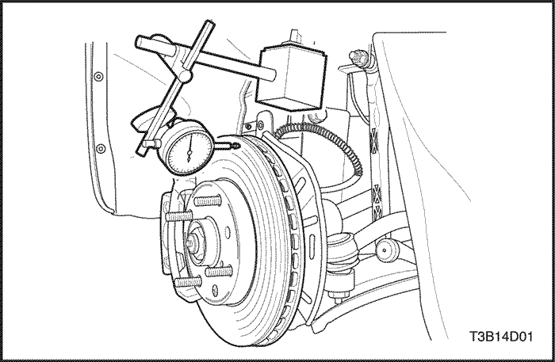


MANTENIMIENTO Y REPARACIÓN
SERVICIO EN EL VEHÍCULO
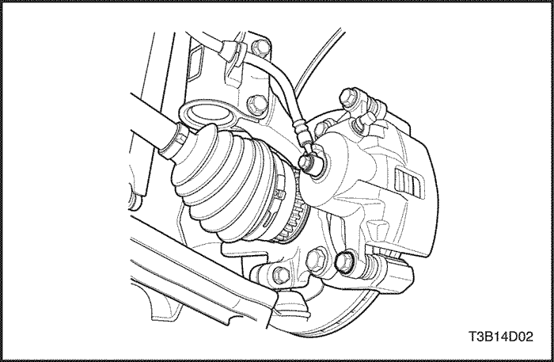
Zapata y forro
Procedimiento de desmontaje
- Levante y apoye el vehículo adecuadamente.
- Para el equilibrio de ruedas, marque las posiciones de la rueda respecto al cubo y desmonte la rueda delantera. Consulte la Sección 2E, Neumáticos y ruedas.
- Quite el tornillo inferior del bastidor de retención del conjunto de la pinza de freno.
Importante: No hace falta desmontar la pinza para reparar los manguitos de freno.
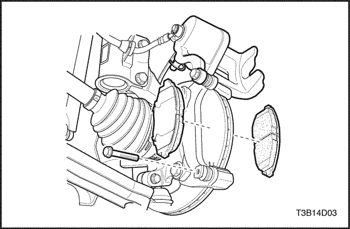
- Tire hacia arriba del alojamiento del pistón de la pinza de freno.
- Desmonte las pastillas de freno.
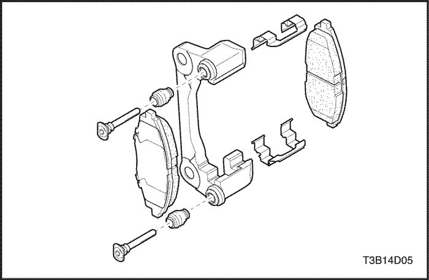
Procedimiento de montaje
- Mida el espesor mínimo de los forros. Consulte el apartado "Comprobación de los forros de freno" de esta sección.
- Monte las pastillas de freno en la pinza.
- Si fuera necesario, empuje el pistón hacia dentro.
Aviso: Tenga cuidado de no dañar el retén del pistón cuando tire hacia abajo de su alojamiento.
- Tire hacia abajo del alojamiento del pistón de la pinza de freno y fíjelo al bastidor de retención con el tornillo inferior.
Apretar
Apriete los tornillos del bastidor de retención al alojamiento de la pinza hasta 27 N•m (20 lb-pie).
- Alinee las marcas que se hicieron antes de desmontar las ruedas y monte las ruedas delanteras. Consulte la Sección 2E, Neumáticos y ruedas.
- Baje el vehículo.
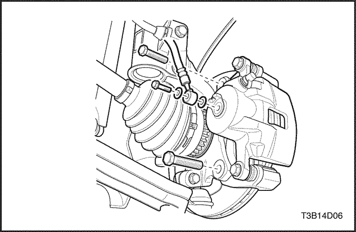
Conjunto de la pinza de freno
Procedimiento de desmontaje
- Levante y apoye el vehículo adecuadamente.
- Marque la posición de las ruedas delanteras respecto a los cubos de rueda y desmonte las ruedas. Consulte la Sección 2E, Neumáticos y ruedas.
- Quite el tornillo y las arandelas que sujetan el manguito de freno a la pinza.
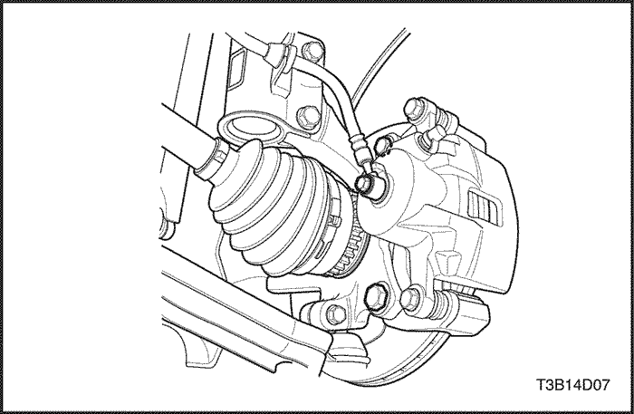
- Desconecte el manguito de freno y tape las aberturas de la pinza de freno y del manguito para evitar la salida de líquido y la entrada de suciedad.
- Quite los tornillos de fijación de la pinza de freno de la mangueta y desmonte el conjunto de la pinza de freno.
Procedimiento de montaje
- Monte el conjunto de la pinza de freno con sus tornillos de fijación.
Apretar
Apriete los tornillos de fijación de la pinza de freno a la mangueta hasta 95 N•m (70 lb-pie).
- Conecte el manguito de freno.
Apretar
Apriete las arandelas y el tornillo de fijación del racor de entrada del manguito de freno a la pinza hasta 40 N•m (30 lb-pie).
- Monte la ruedas delanteras. Consulte la Sección 2E, Neumáticos y ruedas.
- Baje el vehículo.
- Llene el cilindro maestro hasta el nivel adecuado de líquido de frenos limpio.
- Purgue la pinza. Consulte la Sección 4A, Frenos hidráulicos o la Sección 4F, Sistema antibloqueo de frenos, si procediese.
- Vuelva a comprobar el nivel de líquido de frenos.
Aviso: No ponga el vehículo en movimiento hasta que se obtenga una sensación de firmeza en el pedal de freno o se producirá una actuación incorrecta del sistema de frenos.
- Pise repetidamente el pedal para que las pastillas entren en contacto con el disco de freno.
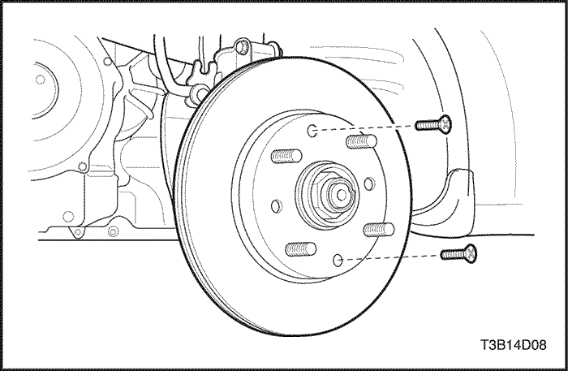
Disco
Procedimiento de desmontaje
Aviso: No deje colgando del manguito de freno el conjunto de la pinza de freno. Cualquier obstrucción interna resultante del manguito impedirá una actuación uniforme del freno.
Importante: Para garantizar una frenada uniforme en ambos lados, ambos discos deben disponer de superficies idénticas en cuanto a la uniformidad de la superficie y la profundidad de las marcas. Por esta razón, sustituya los discos de freno siempre por parejas.
- Desmonte el conjunto de la pinza de freno sin desconectar los manguitos. Consulte el apartado "Conjunto de la pinza de freno" de esta sección.
- Desmonte el soporte de la pinza de freno.
- Quite el prisionero de fijación del disco al cubo de la rueda delantera.
- Extraiga el disco.
Procedimiento de montaje
- Inspeccione el disco. Consulte el apartado "Inspección de los discos de freno" de esta sección.
- Monte el disco en el cubo de rueda delantera apretando el prisionero de fijación.
Apretar
Apriete el prisionero de fijación del disco al cubo de la rueda delantera hasta 4 N•m (35 lb-pie).
- Monte el soporte de la pinza de freno.
Apretar
Apriete los tornillos de fijación del soporte de la pinza de freno hasta 95 N•m 70 lb-pie).
- Monte el conjunto de la pinza de freno. Consulte el apartado "Conjunto de la pinza de freno" de esta sección.

Placa guardabarros
Procedimiento de desmontaje
- Desmonte el disco de freno. Consulte el apartado "Disco" de esta sección.
- Quite los tornillos de la placa guardabarros a la mangueta.
- Desmonte la placa guardabarros.
Procedimiento de montaje
- Monte la placa guardabarros.
- Sujete la placa guardabarros a la mangueta con sus tornillos.
Apretar
Apriete los tornillos de la placa guardabarros a la mangueta hasta 4 N•m (35 lb-pulg.).
- Monte el disco. Consulte el apartado "Disco" de esta sección.
REPARACIÓN DE LOS COMPONENTES
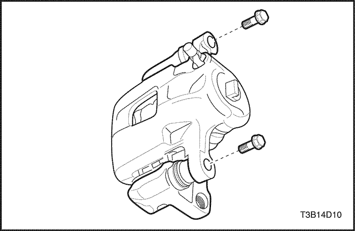
Revisión general de la pinza de freno
Procedimiento de desmontaje
- Desmonte el conjunto de la pinza de freno. Consulte el apartado "Conjunto de la pinza de freno" de esta sección.
- Quite el pasador guía de la pinza de freno que une el alojamiento del pistón de la pinza de freno al bastidor de retención.
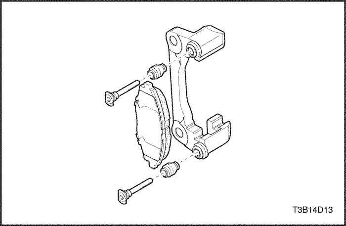
- Desmonte el protector de la válvula de purga y la propia válvula.
- Tire hacia fuera de los pasadores y de los guardapolvos de goma.
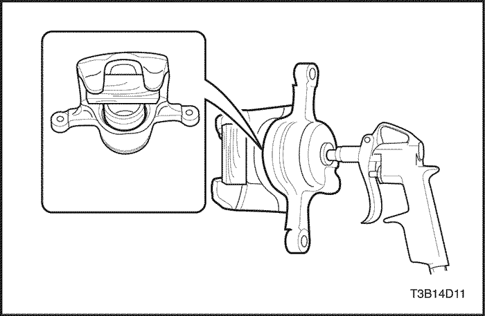
- Desmonte el juego de pastillas de freno delanteras, incluyendo los muelles de las pastillas de la pinza. Consulte el apartado "Zapata y forro" de esta sección.
Precaución: No intente agarrar el pistón cuando lo desmonte con aire comprimido. El pistón saltará de su alojamiento con bastante fuerza y puede hacerle daño en la mano o los dedos.
Importante: Introduzca un taco de madera dura en el interior del alojamiento de la pinza cuando vaya a desmontar el pistón.
- Utilizando aire comprimido, expulse el pistón de su alojamiento.
- Desmonte el retén exterior.
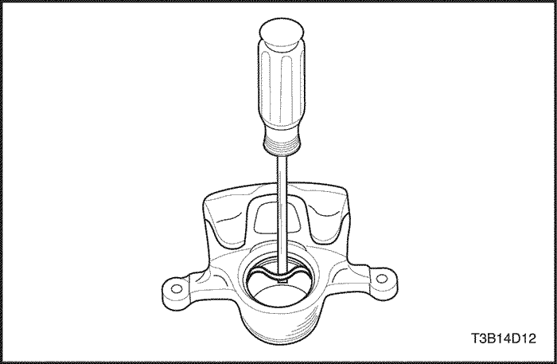
- Desmonte el retén interior del alojamiento del pistón de la pinza.
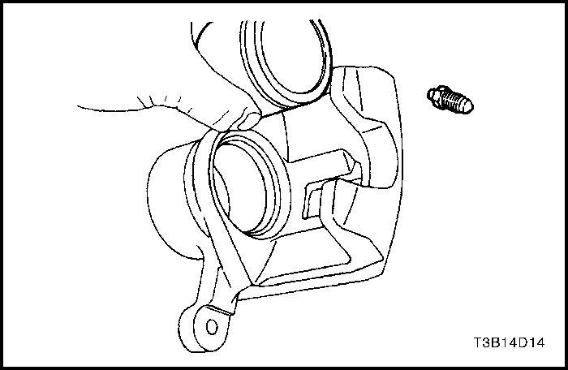
Procedimiento de montaje
- Limpie todas las piezas con alcohol desnaturalizado o líquido de frenos. Seque las piezas con aire comprimido sin contenido de aceite y sople todos los conductos del alojamiento y de la válvula de purga.
- Compruebe si hay rayas, melladuras o corrosión en el pistón y en la pinza de freno. Sustituya los componentes si se descubre alguno de estos defectos.
- Inspeccione la válvula de purga de la pinza del freno.
Importante: No use ni un bruñidor ni otro procedimiento para eliminar material del pistón o del interior de la pinza.
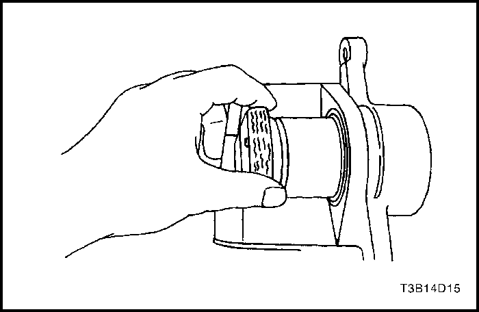
- Lubrique un nuevo retén interior del pistón.
- Monte el retén interior del pistón en la ranura del alojamiento de la pinza de freno. Asegúrese de que el retén no esté torcido.
- Coloque la junta guardapolvo exterior del pistón en la ranura.
- Lubrique el pistón con líquido de frenos.
- Introduzca el pistón en su alojamiento y asegúrese de que la junta guardapolvo queda colocada en la ranura del pistón.
- Recubra los pasadores con grasa para goma y coloque los guardapolvos.
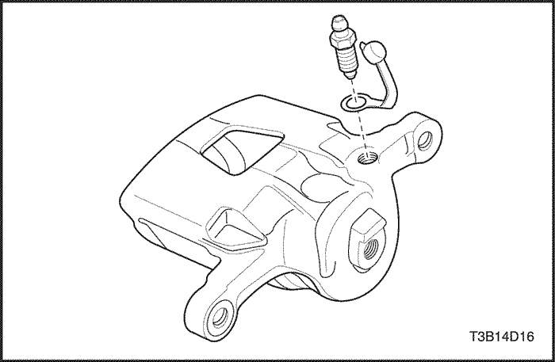
- Monte la válvula de purga de la pinza del freno y el tapón guardapolvo.
Apretar
Apriete la válvula de purga de la pinza de freno hasta 6 N•m (53 lb-pulg.).
- Conecte las pastillas de freno y los muelles de las pastillas.
Importante: Asegúrese de que los muelles de las pastillas queden debidamente montados.
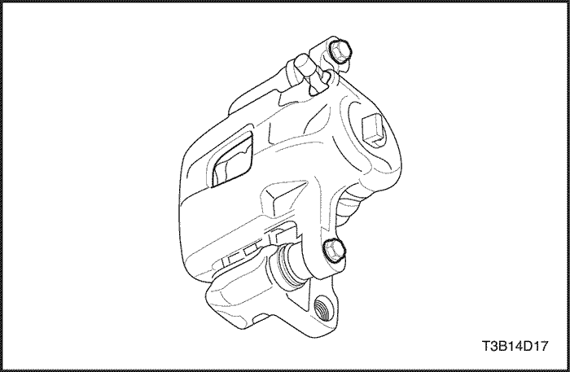
- Conecte el bastidor de retención al alojamiento de la pinza con sus tornillos guía.
Apretar
Apriete los tornillos del bastidor de retención al alojamiento de la pinza hasta 27 N•m (20 lb-pie).
- Monte el conjunto de la pinza de freno. Consulte el apartado "Conjunto de la pinza de freno" de esta sección.
- Purgue el sistema de frenos. Consulte la Sección 4A, Frenos hidráulicos (o la Sección 4F, Sistema antibloqueo de frenos, si procediese.
- Aplique repetidamente los frenos hasta que se obtenga una sensación de firmeza en el pedal.
DESCRIPCIÓN GENERAL Y FUNCIONAMIENTO DEL SISTEMA
Conjunto de la pinza del freno de disco
Esta pinza de freno dispone de un agujero único y va montada en la mangueta con dos tornillos de fijación. La presión hidráulica que se crea al pisar el pedal de freno se convierte, por la acción de esta pinza, en una fuerza de detención. Esta fuerza actúa igualmente contra el pistón y contra la parte inferior del interior de la pinza para desplazar el pistón hacia fuera y hacer que se deslice la pinza hacia dentro, ejerciendo una acción de pinza sobre el disco de freno. Esta acción de pinza fuerza los forros contra el disco de freno, creando un rozamiento capaz de parar el vehículo.
Importante: - Sustituya todos los componentes incluidos en los kit de reparación utilizados para reparar la pinza de freno.
- Lubrique las piezas de goma con líquido de frenos limpio para facilitar su montaje.
- No utilice aire comprimido del taller, con un cierto contenido de aceite, en las piezas del freno, ya que se pueden ocasionar daños a los componentes de goma.
- Si se desmonta o se desconecta cualquier componente del sistema hidráulico, puede resultar necesario tener que purgar la totalidad o una parte del sistema de frenos.
- Sustituya las pastillas únicamente en juegos por eje.
- Los valores de los pares de apriete especificados son para elementos de sujeción secos y sin lubricar.
- Efectúe las labores de reparación en un banco limpio y sin ningún material que tenga aceite mineral.